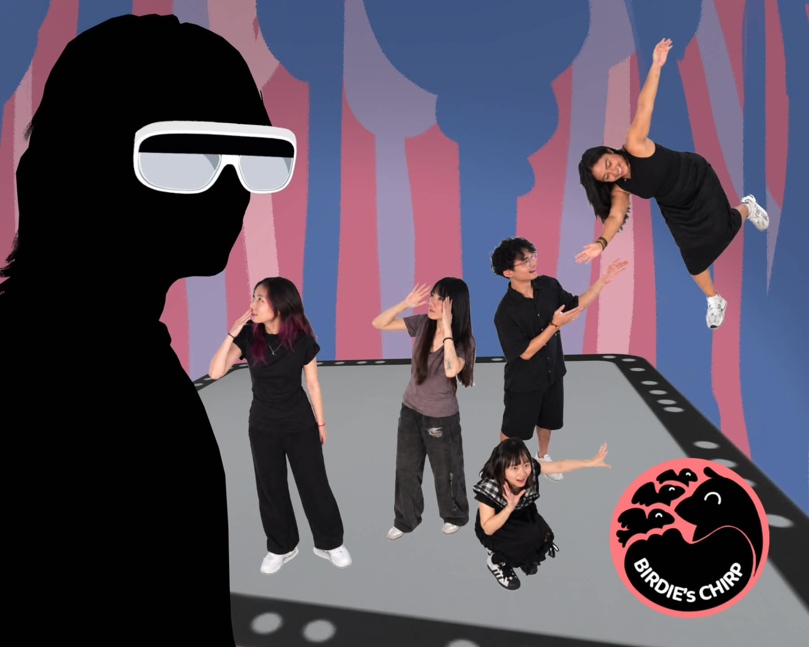
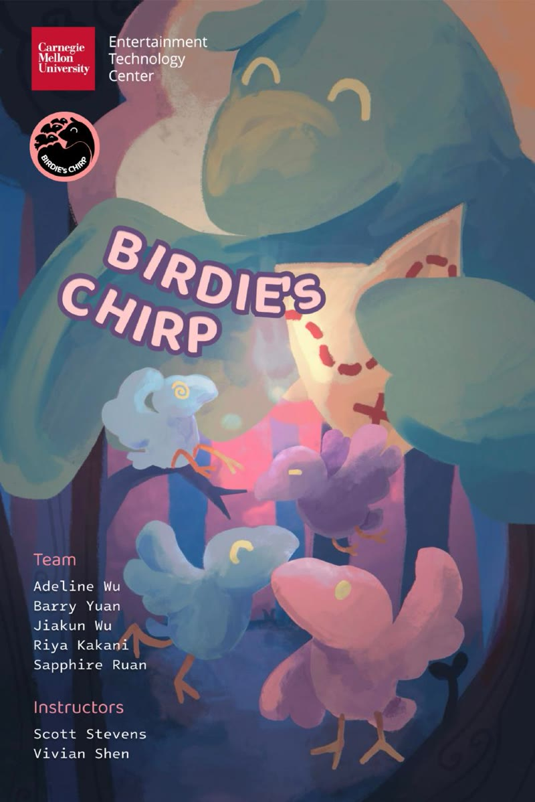

Created at Carnegie Mellon University’s Entertainment Technology Center, Fall 2026.
In collaboration with Adeline Wu, Barry Yuan, Jiakun Wu, and Sapphire Ruan
Instructors: Scott Stevens and Vivian Shen
This project is in progress. What you see here is our tracking and prototyping work so far. Check back for gameplay as it develops.
Key Words: Asymmetrical multiplayer · Tilt Five AR · Multi-camera body tracking · Multi-camera sync hub · Orbbec point clouds · ZED point clouds · Physical-to-virtual mapping · Real-time position tracking · Tracking-loss handling · Party game design · Rapid prototyping
Latest: body tracking after fine-tuning the version below. If a player is lost while inside the grid, they stay in play; if a player is lost because they walked outside the grid, their player is disabled.
Before fine-tuning: players in the physical room (left) mapped onto their characters in the virtual space (right).
A challenge prototype that tracks where players stand relative to each other.
Early test: Orbbec point cloud of the play space.
Early test: ZED point cloud of the play space.


I am working on the tracking pipeline that connects the people in the room to the game world, so the player on the Tilt Five can see and guide everyone in the physical space.
We started by testing Orbbec point clouds and ZED point clouds to see how well each could capture the room and the players moving through it.
We landed on multi-camera body tracking using a multi-camera sync hub, which gives steadier, more reliable positions for several players at once.
Each tracked player is mapped onto the floor grid in the game, giving real-time position tracking that challenges can respond to, like checking how players are standing in relation to each other.
I fine-tuned how the game handles tracking loss. If a player is lost while inside the grid, they remain in play, so a brief dropout doesn't knock them out. If a player is lost because they walked outside the grid, their player is disabled.
• Unity Engine & C# scripting
• Tilt Five AR glasses
• Orbbec Femto Bolt depth cameras
• ZED stereo camera
• Multi-camera sync hub & body tracking
Birdies Chirp is an asymmetrical party game. One player wears a Tilt Five headset and sees the room as a game board, while everyone else plays in the physical room. The Tilt Five player helps the group solve challenges by guiding them through the space.